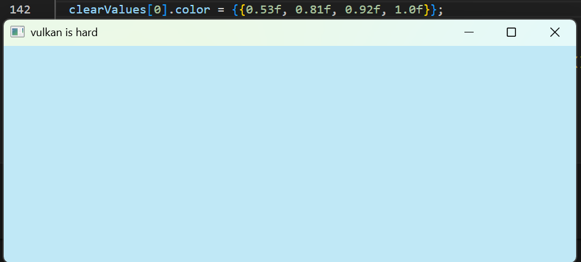

First rendered triangle

The objective of this project is to develop a real-time 3D rendering environment using the Vulkan graphics API, with a primary focus on implementing dynamic lighting through point lights.
The goal is to approximate the visual result shown in a reference scene created in Unity. This reference serves as a target for both visual quality and feature completeness, guiding the technical decisions made throughout the project.

Vulkan is a modern, low-level graphics API that provides explicit control over GPU operations. Unlike higher-level APIs such as OpenGL, Vulkan requires manual management of memory, synchronization and command submission. While this increases complexity, it also offers significantly more control and potentially big performance benefits.
My primary motivation for choosing Vulkan is to gain a deeper understanding and become better in low-level graphics programming. Additionally, this project serves as an opportunity to improve my competency in C++, a language I am not yet fully comfortable with but want to master further.
Another reason for selecting Vulkan is its growing relevance within the industry. Vulkan is designed with modern hardware in mind and is widely considered a futureproof API due to its performance focused design and cross platform support (Windows, Mac and Linux).
Even Minecraft is planning on changing their 15 year old OpenGL based engine to be based on Vulkan instead (Minecraft, 2026). The potential performance and scalability benefits are becoming harder for big companies to ignore, making it worth the time to invest in learning this tech:
Comparisons
It is important to note, while Vulkan offers higher performance potential, incorrect usage can result in even worse performance due to its complex nature.
To recreate the Unity reference scene, I defined the following requirements using the MoSCoW prioritization method:
If I have the time, I'd like to implement the following features as well:
Vulkan cannot operate independently and requires additional libraries:
The Vulkan SDK is required to compile and run the application.
BUFFER ========== A buffer is just a chunk of memory used to store data.
A window is created using GLFW, which acts as the surface for Vulkan rendering.

Basic GLFW window
Unlike OpenGL, Vulkan does not execute commands immediately. Instead, commands are recorded into command buffers and submitted to GPU queues.
The first step in rendering is drawing a simple triangle using vertex buffers and shaders.
First rendered triangle
Shaders are written in GLSL and compiled to SPIR-V before use.
// Vertex Shader (GLSL)
#version 450
layout(location = 0) in vec3 position;
layout(location = 1) in vec3 color;
layout(location = 0) out vec3 fragColor;
void main() {
gl_Position = vec4(position, 1.0);
fragColor = color;
}
A custom model system was implemented to support arbitrary vertex data.

Multicolored cube with transformations
// Rotation example
gameObject.transform.rotation.y += 0.01f;
// Wrapped rotation
gameObject.transform.rotation.y =
glm::mod(gameObject.transform.rotation.y, glm::two_pi<float>());
void EnginatorModel::createIndexBuffers(const std::vector &indices) {
indexCount = static_cast(indices.size());
hasIndexBuffer = indexCount > 0;
assert(vertexCount >= 3 && "Vertex count must be at least 3");
VkDeviceSize bufferSize = sizeof(vertices[0]) * vertexCount;
device_.createBuffer(bufferSize, VK_BUFFER_USAGE_VERTEX_BUFFER_BIT,
VK_MEMORY_PROPERTY_HOST_VISIBLE_BIT |
VK_MEMORY_PROPERTY_HOST_COHERENT_BIT,
vertexBuffer, vertexBufferMemory);
void *data;
vkMapMemory(device_.device(), vertexBufferMemory, 0, bufferSize, 0, &data);
memcpy(data, vertices.data(), static_cast(bufferSize));
vkUnmapMemory(device_.device(), vertexBufferMemory);
}
A camera class was implemented to navigate through the 3D scene.
Camera movement demonstration
Lighting will be implemented using per-fragment calculations.
Future work includes shadow mapping techniques. Ambient lighting assumes an object recieves a tiny bit of light from every direction Directional light 1 direction
At this stage, the system supports:
This project provided valuable insights into low-level graphics programming. Working with Vulkan significantly improved understanding of GPU pipelines, memory management, and rendering systems.
Additionally, the project strengthened C++ knowledge, including pointers, destructors, and header file structures.
👉 You don’t bind buffers/images directly to the pipeline 👉 You bind a descriptor set that contains them
Instead of this (OpenGL style): bind buffer A bind texture B bind buffer C draw Vulkan does: bind descriptor set (A + B + C together) draw
Minecraft. (February 18, 2026). Another step towards vibrant visuals for Java Edition. https://www.minecraft.net/en-us/article/another-step-towards-vibrant-visuals-for-java-edition